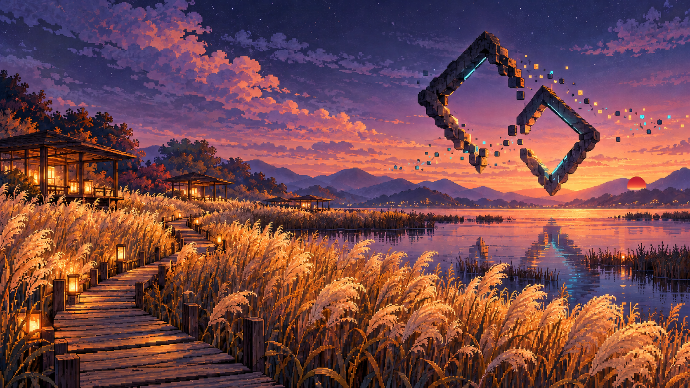

이번 수정
익숙한 풍경을 살리고,
태양만 붉게.
처음의 황금빛 갈대밭, 따뜻한 나무 산책길, 보랏빛 노을과 두 개의 마름모 구조물을 살렸습니다.
오른쪽 먼 산 너머에 작은 붉은 태양을 더했습니다. 기존 시안을 편집 대상으로 삼아 태양 주변의 국소적인 수정만 요청했고, 전체 분위기와 구도가 유지되는지 확인했습니다.
디지털 갈대 정원 · 수정 03
금빛 갈대와 보랏빛 하늘.
작은 붉은 태양을 더했습니다.

이번 수정
처음의 황금빛 갈대밭, 따뜻한 나무 산책길, 보랏빛 노을과 두 개의 마름모 구조물을 살렸습니다.
오른쪽 먼 산 너머에 작은 붉은 태양을 더했습니다. 기존 시안을 편집 대상으로 삼아 태양 주변의 국소적인 수정만 요청했고, 전체 분위기와 구도가 유지되는지 확인했습니다.
벤치마킹과 제작 방식
참고 사진은 분위기 분석에만 사용했습니다. 원본의 이미지 픽셀·잔디 언덕 사진·눈·손·윈도 화면·아이콘·문구는 이 시안에 넣지 않았습니다. 기존 풍경은 별도의 프롬프트로 생성한 자체 AI 시안이며, 이번에는 그 시안을 입력으로 사용해 붉은 태양을 반영했습니다.
단순한 색 변경이나 일부 요소 교체에 그치지 않도록, 상징과 배치까지 달리하는 기준으로 검토했습니다. 스타일이라는 아이디어와 구체적인 표현을 구분한다는 점은 한국저작권위원회 안내에서도 확인할 수 있습니다.
이 페이지는 방향 검토용입니다. 현재 다운로드되는 맵은 기존 v3이며, 이 콘셉트 이미지는 맵에 적용된 텍스처나 게임 화면이 아닙니다. 실제 Roblox 구현 시에는 별도의 복셀 조형물·픽셀 패널·조명 작업으로 옮기는 것이 적절합니다.
생성 도구·전체 프롬프트·제작 기록 보기 ↗추천 방향